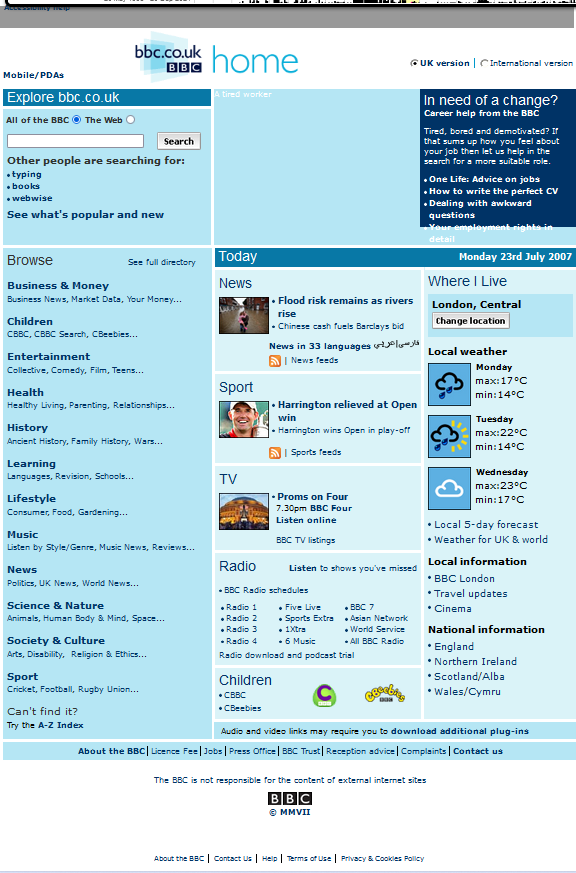
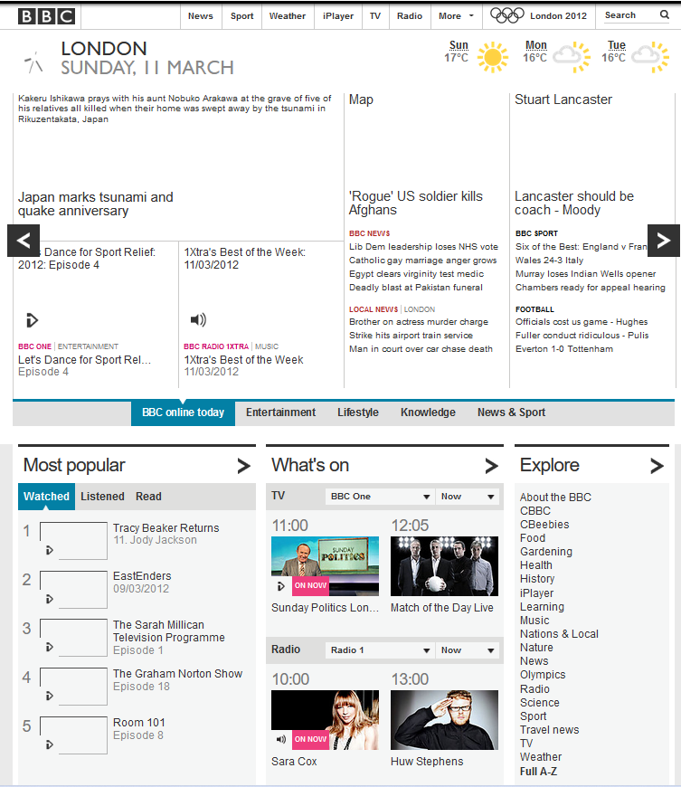

Os sites de 2006 a 2011 apresentam inúmeras melhorias. Não só o site ficou mais polido em um período de 5 anos, como também a estrutura mudou completamente, junto com seu design. Isso aparentava ser por conta das olímpiadas de 2012, que estavam prestes a acontecer, logo no país da sede da BBC, a Inglaterra, logo, não era surpresa a BBC querer dar um update visual em seu site por conta disso.